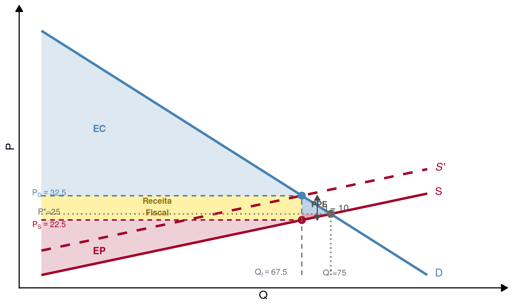
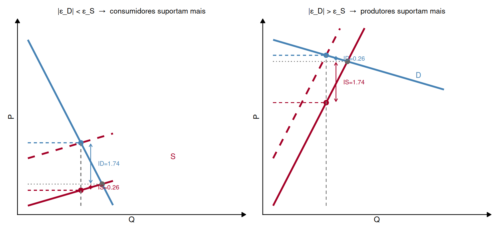
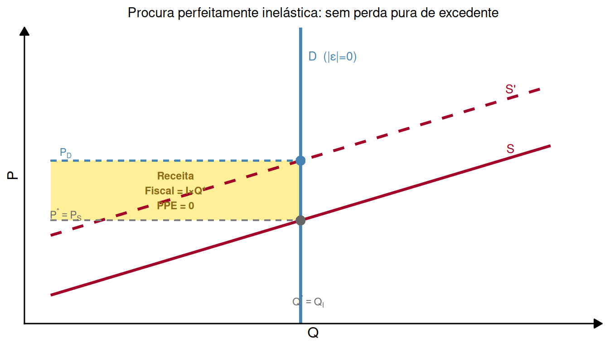

Microeconomia
Impostos Indiretos e Elasticidade
Impostos Indiretos: Conceito
O que é um imposto indireto específico?
Imposto Específico (lump-sum)
Um imposto indireto específico é um montante fixo \(I\) cobrado por cada unidade produzida e vendida, independentemente do preço. Exemplos: ISV (Imposto sobre Veículos), ISP (Imposto sobre os Combustíveis).
O lançamento do imposto cria uma cunha entre o preço pago pelo consumidor (\(P_D\)) e o preço recebido pelo produtor (\(P_S\)):
\[\boxed{P_D = P_S + I}\]
Incidência legal vs. económica
Normalmente é o produtor quem entrega o imposto ao Estado (incidência legal). Mas a incidência económica — quem efetivamente suporta o custo — é partilhada entre consumidores e produtores, dependendo das elasticidades.
Equilíbrio com Imposto
O sistema de equilíbrio após lançamento do imposto \(I\):
\[\begin{cases} Q_D = f_D(P_D) \\ Q_S = f_S(P_S) \\ Q_D = Q_S \\ P_D = P_S + I \end{cases}\]
Graficamente: a oferta “vista pelo consumidor” desloca-se para cima em \(I\) unidades — o consumidor paga \(I\) a mais por cada unidade, pelo que a oferta aparece distorcida.
Atenção
A oferta de mercado não se contrai — os produtores não alteram a sua disposição a produzir. O que muda é o preço que os consumidores enfrentam para cada nível de oferta.
Efeito Gráfico do Imposto

Incidência Económica e Excedentes
Quem paga o imposto?
O imposto total \(I\) é suportado em partes pelos dois lados do mercado:
\[I = \underbrace{(P_D - P^*)}_{\text{incidência no consumidor: } I_D} + \underbrace{(P^* - P_S)}_{\text{incidência no produtor: } I_S}\]
No exemplo (\(Q_D = 100 - P\), \(Q_S = 3P\), \(I = 10\)):
\[I_D = 32{,}5 - 25 = 7{,}5 \qquad I_S = 25 - 22{,}5 = 2{,}5\]
Os consumidores suportam 75% do imposto; os produtores apenas 25%. Porquê esta assimetria?
Efeito nos Excedentes: Resumo
| Antes do imposto | Após imposto | |
|---|---|---|
| Excedente do Consumidor | \(EC_0\) | \(EC_0 - I_D \cdot Q_I - \frac{1}{2}I_D\cdot\Delta Q\) |
| Excedente do Produtor | \(EP_0\) | \(EP_0 - I_S \cdot Q_I - \frac{1}{2}I_S\cdot\Delta Q\) |
| Receita Fiscal | 0 | \(I \times Q_I\) |
| Perda Pura de Excedente | 0 | \(\frac{1}{2} \cdot I \cdot \Delta Q > 0\) |
Perda Pura de Excedente (PPE)
O imposto gera sempre uma perda pura de excedente (triângulo de Harberger) porque reduz a quantidade transacionada abaixo do nível socialmente ótimo. A soma do que consumidores e produtores perdem excede a receita fiscal arrecadada pelo Estado. \[PPE = \frac{1}{2} \cdot I \cdot (Q^* - Q_I)\]
Exemplo Numérico: Equilíbrio e Imposto
\(Q_D = 100 - P\), \(\quad Q_S = 3P\), \(\quad I = 10\)
Sem imposto: \(100 - P = 3P \Rightarrow P^* = 25\), \(Q^* = 75\)
Com imposto (\(P_D = P_S + 10\), \(Q_D = Q_S\)):
\[100 - P_D = 3P_S \quad \text{e} \quad P_D = P_S + 10 \implies P_S = 22{,}5,\quad P_D = 32{,}5,\quad Q_I = 67{,}5\]
\[I_D = 32{,}5 - 25 = 7{,}5 \qquad I_S = 25 - 22{,}5 = 2{,}5 \qquad \text{Receita Fiscal} = 10 \times 67{,}5 = 675\]
\[PPE = \tfrac{1}{2}\times 10 \times (75 - 67{,}5) = \mathbf{37{,}5}\]
Exemplo Numérico: Excedentes
| Antes do imposto | Após imposto | Variação | |
|---|---|---|---|
| Excedente Consumidor | \(2812{,}5\) | \(2278{,}1\) | \(-534{,}4\) |
| Excedente Produtor | \(937{,}5\) | \(759{,}4\) | \(-178{,}1\) |
| Receita Fiscal | \(0\) | \(675{,}0\) | \(+675{,}0\) |
| Perda Pura | \(0\) | \(37{,}5\) |
Verificação: \(534{,}4 + 178{,}1 = 712{,}5 = 675 + 37{,}5\) ✓
A soma das perdas de EC e EP excede a receita fiscal em exatamente 37,5 — a perda pura de excedente.
Elasticidade e Incidência do Imposto
A Relação Fundamental
A forma como o imposto se reparte entre consumidores e produtores depende exclusivamente das elasticidades de cada lado:
\[\boxed{\frac{|\varepsilon_D|}{\varepsilon_S} = \frac{I_S}{I_D}}\]
Interpretação:
- Se \(|\varepsilon_D| > \varepsilon_S\): produtores suportam mais (\(I_S > I_D\))
- Se \(|\varepsilon_D| < \varepsilon_S\): consumidores suportam mais (\(I_D > I_S\))
- Se \(|\varepsilon_D| = \varepsilon_S\): imposto repartido igualmente
Intuição económica
O lado do mercado menos elástico (menos capaz de ajustar o seu comportamento face ao preço) suporta uma maior parte do imposto.
Verificação no Exemplo
\(Q_D = 100 - P\), \(\quad Q_S = 3P\), avaliadas em \(P^* = 25\), \(Q^* = 75\):
\[|\varepsilon_D| = \left|-1 \times \frac{25}{75}\right| = \frac{1}{3} \qquad \varepsilon_S = 3 \times \frac{25}{75} = 1\]
\[\frac{|\varepsilon_D|}{\varepsilon_S} = \frac{1/3}{1} = \frac{1}{3}\]
\[\frac{I_S}{I_D} = \frac{2{,}5}{7{,}5} = \frac{1}{3} \quad \checkmark\]
A oferta é mais elástica que a procura → os consumidores suportam mais ¾ do imposto.
Elasticidade e Incidência: Gráfico

- Esquerda: procura inelástica (\(|\varepsilon_D|\) pequeno) → \(I_D \gg I_S\) — consumidores quase não reduzem a procura, acabam por absorver a maior parte
- Direita: oferta inelástica (\(\varepsilon_S\) pequeno) → \(I_S \gg I_D\) — produtores não conseguem fugir ao imposto
Caso Extremo: Sem Perda Pura

- Se \(|\varepsilon_D| = 0\) (ou \(\varepsilon_S = 0\)): a quantidade não muda → sem perda pura — o imposto é puro transfer para o Estado, sem distorção
- Este é o caso teoricamente mais “eficiente” para o fisco, mas raramente verificado na prática
Elasticidade e Dimensão da PPE
Princípio da distorção mínima
Quanto maiores as elasticidades de ambos os lados do mercado, maior a distorção na quantidade transacionada e, portanto, maior a perda pura de excedente para o mesmo imposto \(I\).
\[PPE = \frac{1}{2} \cdot I \cdot \underbrace{(Q^* - Q_I)}_{\text{distorção}} \quad \text{cresce com } |\varepsilon_D| \text{ e } \varepsilon_S\]
Implicações para política fiscal:
- Tributar bens com procura inelástica minimiza a distorção (ex.: tabaco, combustíveis, álcool)
- Tributar bens com procura elástica gera distorções maiores e menor receita
Exercícios
Exercício 1 — Escolha Múltipla
No mercado de um bem, \(Q_D = 60 - 2P\) e \(Q_S = 4P\). É lançado um imposto específico \(I = 6\). Qual o preço que os consumidores pagam (\(P_D\)) e o preço que os produtores recebem (\(P_S\)) após o imposto?
\(P_D = 14\), \(P_S = 8\)
\(P_D = 12\), \(P_S = 6\)
\(P_D = 13\), \(P_S = 7\)
\(P_D = 16\), \(P_S = 10\)
Exercício 1 — Solução
Sistema de equilíbrio:
\[\begin{cases} 60 - 2P_D = 4P_S \\ P_D = P_S + 6 \end{cases}\]
Substituindo \(P_D = P_S + 6\):
\[60 - 2(P_S + 6) = 4P_S \implies 60 - 2P_S - 12 = 4P_S \implies 48 = 6P_S\]
\[P_S = 8, \quad P_D = 14, \quad Q_I = 60 - 2(14) = 32\]
Verificação: \(Q_S = 4 \times 8 = 32\) ✓ \(\quad\) \(P_D - P_S = 14 - 8 = 6 = I\) ✓
Resposta: A)
Exercício 2 — Escolha Múltipla
Continuando o exercício anterior (\(Q_D = 60 - 2P\), \(Q_S = 4P\), \(P^* = 10\), \(Q^* = 40\), após imposto \(I = 6\): \(P_D = 14\), \(P_S = 8\)). Qual a afirmação correta?
Os consumidores e produtores suportam o imposto em partes iguais
Os consumidores suportam mais, porque \(|\varepsilon_D| < \varepsilon_S\)
Os produtores suportam mais, porque \(|\varepsilon_D| < \varepsilon_S\)
Os consumidores suportam mais, porque \(|\varepsilon_D| > \varepsilon_S\)
Exercício 2 — Solução
Incidência:
\[I_D = P_D - P^* = 14 - 10 = 4 \qquad I_S = P^* - P_S = 10 - 8 = 2\]
Elasticidades em \(P^* = 10\), \(Q^* = 40\):
\[|\varepsilon_D| = \left|-2 \times \frac{10}{40}\right| = 0{,}5 \qquad \varepsilon_S = 4 \times \frac{10}{40} = 1\]
\[\frac{|\varepsilon_D|}{\varepsilon_S} = \frac{0{,}5}{1} = 0{,}5 = \frac{I_S}{I_D} = \frac{2}{4} \quad \checkmark\]
\(|\varepsilon_D| < \varepsilon_S\) → a procura é menos elástica → consumidores suportam mais (\(I_D = 4 > I_S = 2\)).
Resposta: B)
Exercício 3 — Desenvolvimento
O mercado de um bem tem: \[Q_D = 80 - 2P \qquad Q_S = 2P\]
(a) Determine o equilíbrio sem imposto: \(P^*\) e \(Q^*\).
(b) É lançado um imposto específico \(I = 8\). Determine \(P_D\), \(P_S\) e \(Q_I\).
(c) Calcule \(I_D\) e \(I_S\). Verifique com as elasticidades que a repartição é coerente.
(d) Calcule a receita fiscal e a perda pura de excedente.
Exercício 3 — Resolução (a) e (b)
Alínea (a): Sem imposto
\[80 - 2P = 2P \implies 4P = 80 \implies P^* = 20, \quad Q^* = 40\]
Alínea (b): Com imposto \(I = 8\)
\[\begin{cases} 80 - 2P_D = 2P_S \\ P_D = P_S + 8 \end{cases}\]
Substituindo: \(80 - 2(P_S + 8) = 2P_S \implies 64 = 4P_S\)
\[P_S = 16, \quad P_D = 24, \quad Q_I = 80 - 2(24) = 32\]
Verificação: \(Q_S = 2 \times 16 = 32\) ✓
Exercício 3 — Resolução (c)
Alínea (c): Incidência e elasticidades
\[I_D = 24 - 20 = 4 \qquad I_S = 20 - 16 = 4\]
O imposto é repartido igualmente: cada lado suporta 4.
Elasticidades em \(P^* = 20\), \(Q^* = 40\):
\[|\varepsilon_D| = \left|-2 \times \frac{20}{40}\right| = 1 \qquad \varepsilon_S = 2 \times \frac{20}{40} = 1\]
\[\frac{|\varepsilon_D|}{\varepsilon_S} = \frac{1}{1} = 1 = \frac{I_S}{I_D} = \frac{4}{4} \quad \checkmark\]
Como \(|\varepsilon_D| = \varepsilon_S\), as elasticidades são iguais e o imposto reparte-se simetricamente.
Exercício 3 — Resolução (d)
Alínea (d): Receita fiscal e PPE
\[\text{Receita Fiscal} = I \times Q_I = 8 \times 32 = 256\]
\[PPE = \frac{1}{2} \times I \times (Q^* - Q_I) = \frac{1}{2} \times 8 \times (40 - 32) = \frac{1}{2} \times 8 \times 8 = 32\]
Verificação via excedentes
\(EC_0 = \frac{(40-20)\times 40}{2} = 400\); \(\quad EC_1 = \frac{(40-24)\times 32}{2} = 256\); \(\quad \Delta EC = -144\)
\(EP_0 = \frac{20 \times 40}{2} = 400\); \(\quad EP_1 = \frac{16 \times 32}{2} = 256\); \(\quad \Delta EP = -144\)
\(\Delta EC + \Delta EP = -288 = -(256 + 32) = -(\text{Receita} + PPE)\) ✓
Síntese
Resumo da Aula
Imposto específico cria uma cunha \(P_D = P_S + I\), reduzindo a quantidade transacionada e gerando:
- Transferência de excedente → Receita Fiscal (Estado)
- Perda pura de excedente: \(PPE = \frac{1}{2} \cdot I \cdot (Q^* - Q_I)\)
Incidência económica — quem suporta mais o imposto:
\[\frac{|\varepsilon_D|}{\varepsilon_S} = \frac{I_S}{I_D}\]
O lado menos elástico suporta proporcionalmente mais.
Relação com PPE:
- Elasticidades altas → grande distorção da quantidade → PPE elevada
- Se \(|\varepsilon_D| = 0\) ou \(\varepsilon_S = 0\) → sem distorção → \(PPE = 0\)
- Tributar bens inelásticos minimiza a perda de eficiência

Microeconomia (Plano de Transição)